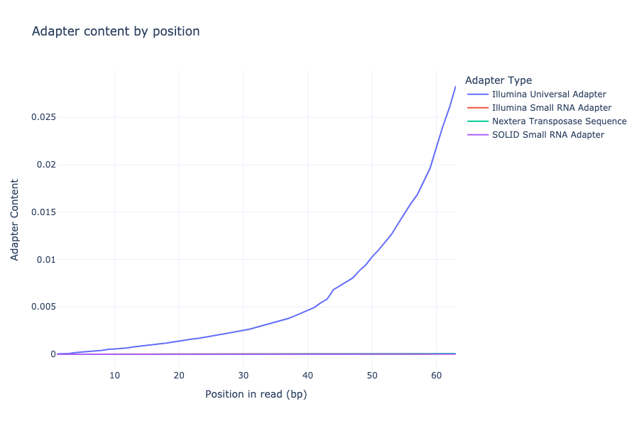

FastQCParser
FastQCParser User Guide:
It is recommended to open this via browser: https://ms2206.github.io/FastQCParser/
Introduction
A Python program to parse FastQCtext files, and generate reports and plots.
- Clone directory:
git clone https://github.com/ms2206/FastQCParser.git - Make a new python environment based from requirments.yaml
conda env create -f requirements.yaml --<NAME> - Load environment
env. conda activate <NAME> - Change directory into FastQCParser
- Example Usage:
python3 src/main.py data/raw/fastqc_data2.txt fastqc_2 -a
Set up
Example Usage:
With python3, run executable found at src/main.py.
Pass data/raw/fastqc_data2.txt (or any fastqc file) - as input file, and fastqc_2 as
output directory (or use a customer directory name).
Use optional argument -a.
python3 src/main.py <FASTQ FILE> <DIR_NAME> [<OPTIONAL_ARGS>]
python3 src/main.py data/raw/fastqc_data2.txt fastqc_2 -a

Optional Args
Help and misc information provided by ArgeParse for optional arguments.
python3 src/main.py -h

Example Plots
Adapter Content
Plot's adapter content by position. 
Kmer Content
Plot's kmer content by position.

Overrepresented sequences
Plot's Per base N content.

Per base sequence content
Plot's Per base sequence content.
Per sequence quality scores
Plot's Per sequence quality scores.

Per sequence GC content
Plot's Per sequence GC content.

Per sequence quality scores
Plot's Per sequence quality scores.
Per tile sequence quality
Plot's Per tile sequence quality.

Sequence Duplication Levels
Plot Sequence Duplication Levels.